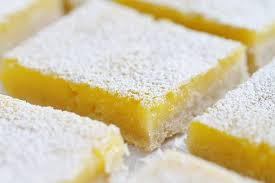

How to Bake Lemon Squares

An original recipe from Sanya Nadeem.
This recipe will make the most mouthwatering lemon squares you have ever
tasted! Within a day your family will finish them all because this dessert
is so irresistible! The moment I had a bite of these pastries, I just could not
stop eating them. Click here
to see more recipes that will keep you licking your lips throughout! This is
definitely the best dessert I have made and I think you will agree as well!
So what are we waiting for? Let's begin!
Ingredients: (makes 24 servings)
Directions:
- Preheat oven to 350 degrees F (175 degrees C). Grease a 9x13 inch pan.
- In a medium bowl, stir together 2 cups flour and confectioners' sugar.
Blend in the melted butter. Press into the bottom of the prepared pan.
- Bake in the preheated oven for 15 minutes, or until golden. In a large
bowl, beat eggs until light. Combine the sugar, baking powder, and 1/4
cup of flour so there will be no flour lumps. Stir the sugar mixture into
the eggs. Finally, stir in the lemon juice. Pour over prepared crust and
return to the oven.
- Bake for an additional 30 minutes or until bars are set. Allow to cool
completely before cutting into bars. After that, serve and enjoy!
Any Feedback or Questions:
Click here.